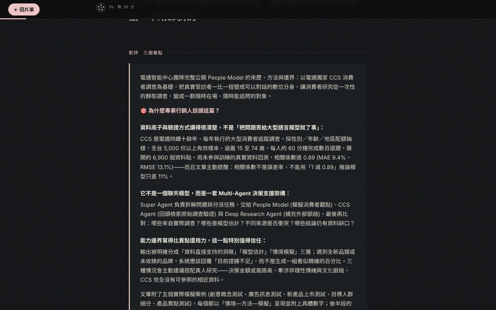
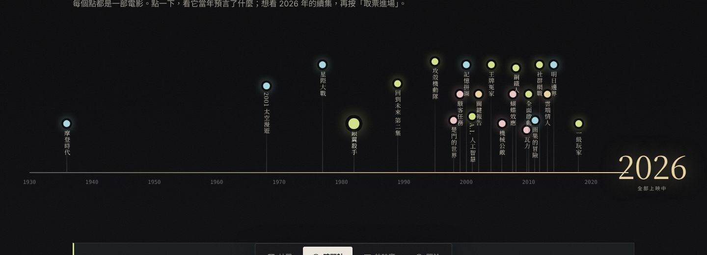

PROPHECY FILM FESTIVAL · 1936 → 2026
預言成真影展
電影早就演過了，2026 只是續集。
當年的科幻，今年的日常
INSIGHT 洞察
沒有人會把一本
近 200 頁的刊物從頭讀到尾。
但每個人，
都很會選電影。
先看片名、再看片長、最後看今晚的心情。這就是我們讀東西的方式。
CONCEPT 概念
22 篇文章 × 22 部預言成真的電影
電影是入口，文章是 2026 年的續集。
THE FILM WALL 片名牆
用片名勾人，
不用文章標題。
- 左右拖曳挑一部片；不動時，片單自己緩緩往右捲
- 四個放映廳，每張卡是一段電影場景加一張原創手繪
- 不使用任何電影海報或劇照
- 今晚，我們挑《駭客任務》，從頭看一遍。

DEMO 1／4 · 進場《駭客任務》
先畫素描，
再下一場數字雨。
- 每部片一張素描、一種片名出場方式，22 部各不相同
- 配樂同時淡入：冷冽的電子節拍，原創旋律，瀏覽器即時合成
- 放映機倒數、黑邊開場，像真的進了影廳
DEMO 2／4 · 劇情版
文章，
變成一部續集。
- 接在電影結局之後：莫斐斯遞出紅色膠囊，帶企劃林瑜去見一群「以真實調查為底的模擬消費者」
- 整篇換上這部片的調性：黑底、綠字、等寬標題
- 中場一張原創插圖，畫完會持續動；關鍵數據放成大字 0.89
- 論點與數據全部來自原文，附頁碼依據

DEMO 3／4 · 原文版
一鍵切回原文：
1999 的預言，2026 的現實。
預告片30 秒一句話摘要
影評3 分鐘三個看點
正片依片長全文，一字未改
顯示剩餘分鐘 · 片尾字幕標註作者與原文頁碼


DEMO 4／4 · 散場
散場，
領一張電影票。
- 票上印著廳別、座位、日期，和「今天帶走的一句話」
- 撕下票根收進票根夾；集滿 22 張，解鎖閉幕片
- 片尾推薦同主題連映，一場接一場

22 FILMS · 每一部都不一樣
換一部片，
整個影廳都換了。
- 22 種片名出場、22 段原創配樂
- 22 張會動的中場插圖、22 種閱讀底色
- 雲端情人是暖桃色的信紙，摩登時代是默片字卡，星際大戰是星空
TIMELINE 預言時間軸
90 年的 22 則預言，全部在 2026 年上映。

當年的科幻，今年的日常。
22 部電影的續集，改編自《2026 決策智慧》22 篇文章
vincenthsu1972.github.io/prophecy-film-festival
進場觀賞 →THANK YOU · 感謝觀賞